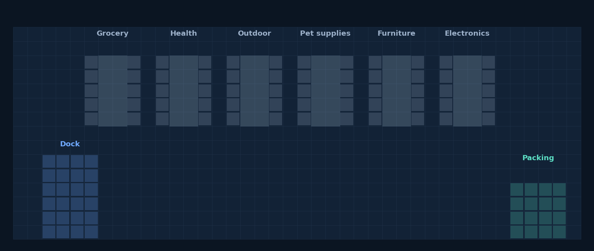
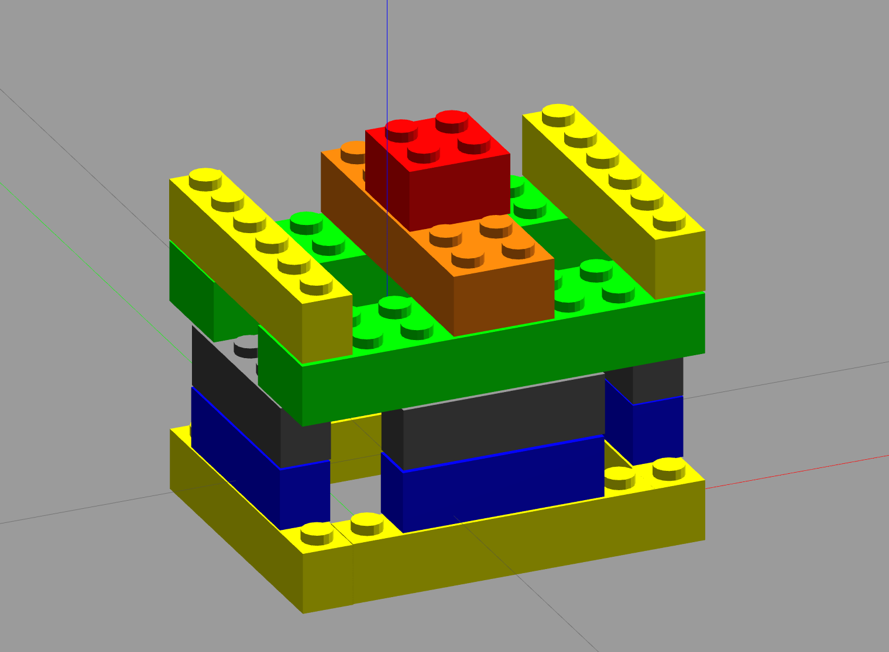

Decomposition-based Hierarchical Task Allocation and Planning for Multi-Robots under Hierarchical Temporal Logic Specifications
A shared warehouse.
Three robot types.
Six robots collect items from six departments, deliver to packing, and return to the dock. Different capabilities make collaboration part of the task.

The same 40 × 15 workspace appears in all three navigation demos.
Assembly in layers.
Two arms share brick-placement tasks. The logical order determines which placements become available next.

Watch the plan unfold.
Select a scenario, then press play. Use fullscreen for the LTL details.
Furniture assistance and delivery
A Type 1 robot waits at furniture for Type 3 assistance, then collects outdoor and pet items. A Type 2 robot collects health items before groceries. Each participating robot delivers to packing and returns to the dock.
Task requirements
- Type 1 stays at furniture until Type 3 arrives.
- Type 2 avoids grocery until health is visited.
- The same assigned robots carry each order through its delivery tasks.
See why the
next task unlocks.
Each milestone connects a logical requirement to a robot’s position or an assigned assembly action.
Robot colors and numbers stay consistent. The task cards identify who must reach the next region.
In Scenario 1, Type 1 waits at furniture until Type 3 arrives. Type 2 must visit health before grocery.
Amber marks an active task, green marks completion, and gray marks pending work. Scenario 3 shows the unselected alternative explicitly.
Navigation videos replay newly solved paths from the repository’s original planner. Assembly videos visualize its task schedules as schematics; they do not simulate physical arm motion.
Two arms,
one LEGO build.
The existing arm-simulation recording is retained here alongside the new schedule replays.
Xusheng Luo, Shaojun Xu, Ruixuan Liu, and Changliu Liu. “Decomposition-based Hierarchical Task Allocation and Planning for Multi-Robots under Hierarchical Temporal Logic Specifications.” IEEE Robotics and Automation Letters, 2024.
Cite this work · BibTeX
@article{luo2024decomposition,
title={Decomposition-based Hierarchical Task Allocation and Planning for Multi-Robots under Hierarchical Temporal Logic Specifications},
author={Luo, Xusheng and Xu, Shaojun and Liu, Ruixuan and Liu, Changliu},
journal={IEEE Robotics and Automation Letters},
year={2024}
}